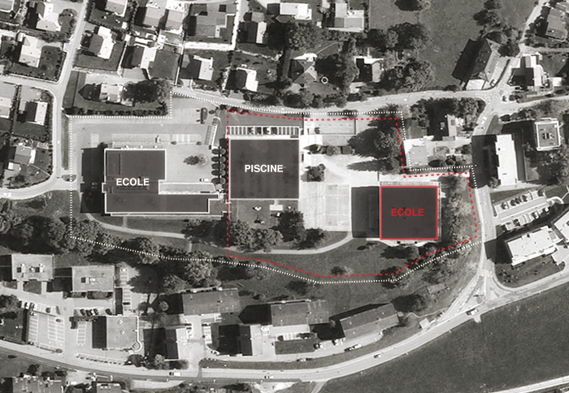
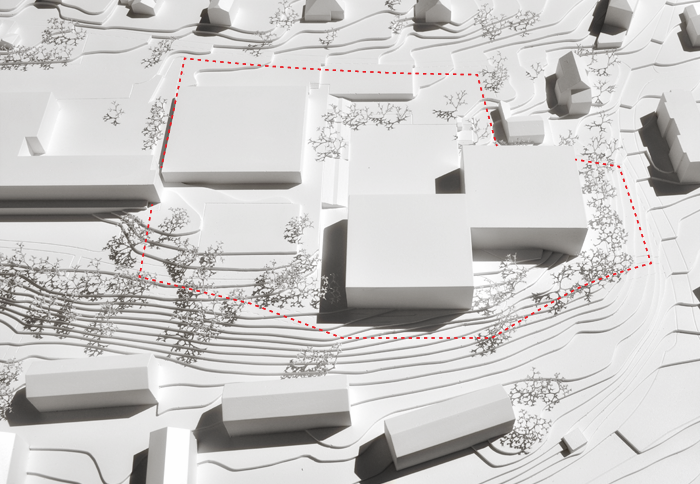
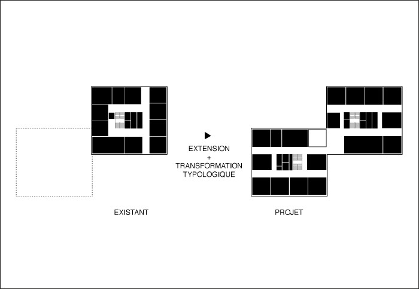
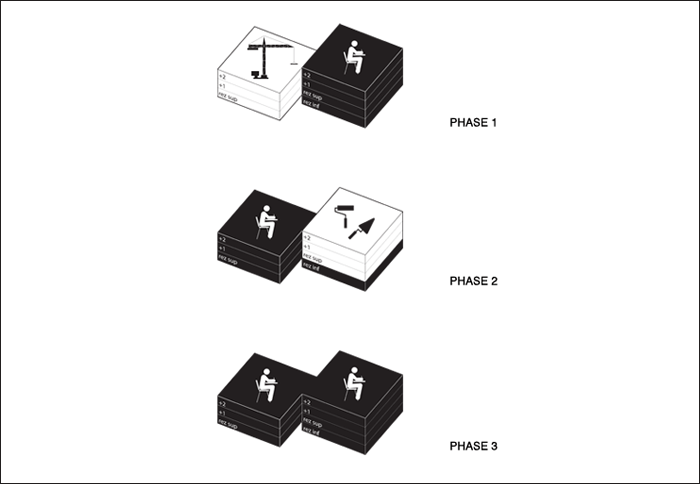

CO LA VEVEYSE
Lieu: Chemin des Crêts, Châtel St-Denis (FR)
Client: Association des communes de la Veveyse pour le Cycle d’Orientation
Programme: Ecole (35 salles de classes, bibliothèque publique, administration)
Budget: 25’000’000 CHF
Date: 2014
Type: concours ouvert
Team: NYX architectes, IngPhi SA (ingénieurs civils)
Images: NYX architectes